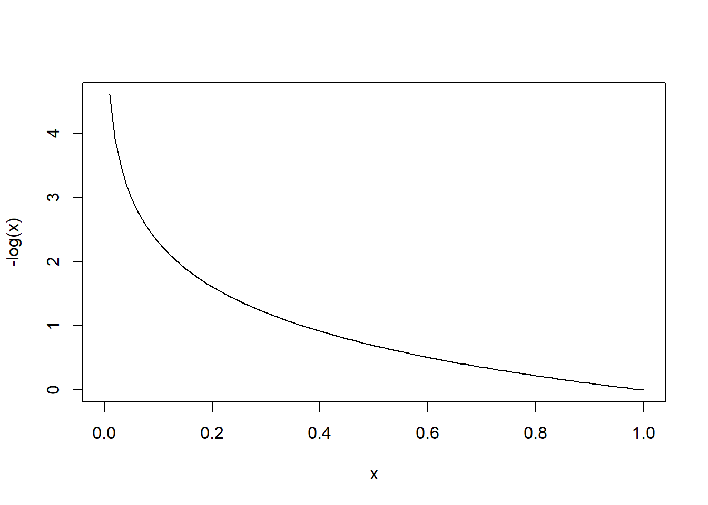

4 Rational Speech Act models (week 5)
4.1 Surprisal in information theory
Information theory is a big field of research. However, here we will only use one (although very important) concepts from information theory, namely surprisal. Surprisal is a quantity that describes, intuitively, how unexpected a certain observation is. The unexpectedness of an observation is intuitively a function of the probability of that observation: the more probable the observation, the less unexpected it will be, and the more improbable the more unexpected.
How to formalize unexpectedness as a function of probability, i.e. find a function \(f\) so that given a probability \(p\) we can calculate its level of unexpectedness \(f(p)\)? We can put some constraints on \(f\) and then find an actual function that satisfies them:
- When an event has probability 0, it is infinitely unexpected. In formal terms, \(f(0.)=\infty\).
- When an event has probability 1, it is not unexpected at all. In formal terms, \(f(1.)=0.\)
- Say we have two independent events with probabilities \(p_1\) and \(p_2\), so that the probability of both of them occurring is \(p_1 p_2\). We want the total unexpectedness of observing both events to be simply the sum of the unexpectedness of the two events. In formal terms \(f(p_1 p_2) = f(p_1)+f(p_2)\).
Given these three requirements, you can see that the following is the function we are looking for to describe surprisal (unexpectedness) as a function of probability:
\[ f(p) = -\log(p) \]
Check that the three requirements above are satisfied:
- \(-\log(p)\) tends to \(\infty\) as \(p\) goes to 0.
- \(-\log(1)=0\).
- \(-\log(p_1 p_2)=-(\log(p_1)+\log(p_2))=(-\log(p_1))+(-\log(p_2))\).
Here’s the plot of this function:

Why is surprisal important to us? Because it can work as a guide to what signal to send to a listener. Imagine that you observe a number between 1 and 10, and you need to describe it to a listener, who hears your description and then has to pick a number - you win the game if number you observed is the same as the number picked by the participant. Suppose you observe 2. Now, would you rather say ‘I saw an even number’ or ‘I saw 2’? Clearly the latter is better when it comes to make the listener guess which number you observed. Why? Well, you can think about it in terms of surprisal: you are trying to minimize the listener’s surprisal of the true number given the signal. In other words, you are trying to send a signal such that the number you observed is not surprising for the listener after they received your signal.
Exercise: Calculate the surprisal of ‘I saw an even number’ and ‘I saw two’ (given that you saw 2).
4.2 The Rational Speech Act model
Let’s start by defining some useful functions:
rowNormalize <- function(x){
# first create a vector with the sums of the rows
summed.rows <- apply(x,1,'sum')
# then divide each element by the sum of its row
normalized.rows <- sweep(x, 1, summed.rows, '/')
# at the end you get a probability distribution for each row
return(normalized.rows)
}
colNormalize <- function(x){
# same as above, but with columns
summed.columns <- apply(x,2,'sum')
normalized.columns <- sweep(x, 2, summed.columns, '/')
# at the end you get a probability distribution for each column
return(normalized.columns)
}
softMax <- function(x, alpha){
# first we calculate the numerator of softmax
# (see definition)
unnormalized.softmax <- exp(alpha*x)
# then we normalize each column
normalized.softmax <- colNormalize(unnormalized.softmax)
return(normalized.softmax)
}Then define the language. Each row corresponds to a signal and each column to a state.
(The example I have in mind is: there’s two cookies in a jar, and you are describing to your friend how many you had. You can say ‘I had some’, ‘I had all’, ‘I had none’, or stay silent. ‘I had some’ would mean that you had 1 or 2 cookies, ‘I had all’ would mean that you had 2 cookies, etc. If you stay silent, that’s compatible with all states - you’re not excluding any option)
language <- rbind(
c(0,1,1),
c(0,0,1),
c(1,0,0),
c(1,1,1)
)
rownames(language) <- c('some', 'all', 'none', 'silence')
colnames(language) <- c(0,1,2)
heatmap(language, Colv=NA, Rowv = NA, scale='none')Now, let’s calculate the literal listener. The listener defines a probability vector for every row (i.e. every signal), because they get a signal and calculate a distribution over states. The literal listener assumes that given a state a random one of the signals compatible with the state is chosen. Since the literal listener has a uniform distribution over states, the posterior can be obtained simply by normalizing the language by row.
Next, let’s calculate the pragmatic speaker. The pragmatic speaker observes a state and has to choose a signal, therefore we’ll end up with a matrix where each column is a distribution. However, the pragmatic speaker does not simply pick a random one among the signals compatible with the observed state. Rather, they tend to pick a signal that has the greatest utility for the literal listener, where utility is calculated as the negative surprisal, \(-(-\log(p))\), of the state given the signal from the point of view of the literal listener.

Finally, we can calculate the pragmatic listener. This is similar to the literal listener above in that it receives a signal and calculates a distribution over states. However, unlike the literal listener above, it knows the signal isn’t simply selected at random. Rather, it imagines the signal as being selected by the pragmatic speaker.
Note that the pragmatic listener correctly infers a scalar implicature. Although ‘most’ is semantically compatible with the state where ‘all’ is also true, in general the pragmatic listener will infer that if ‘most’ was uttered, ‘all’ was not true (or the pragmatic speaker would have said ‘all’ instead). This is a bit tricky to wrap your head around, so make sure you have followed every step of the simulation above and see how it corresponds to your linguistic intuition.
4.3 If there is time left…
- Add more meanings and signals and see how the model behaves.
- Add costs to the utterances based on the equations in the paper, and observed what effects it has.
- Rewrite the code above to work with log probabilities.
4.4 Exercises
- What is the surprisal of observing:
- 4 heads in a row from an unbiased coin?
- 2 heads and 2 tails?
- 3 red balls from a cup containing 3 blue balls and 1 red ball?
- What is the effect of increasing the rationality parameter in the RSA model? What happens when the rationality parameter goes to \(\infty\)? And 0?
- Add a cost to the signals as described in the paper, so that silence has cost 0 and the other three signals cost 1. What is the effect of increasing the cost of a signal on the probability of the signal being uttered?
- Add one level of recursion to the RSA code. What happens to the \(p(2|\text{all})\)? Plot it.
- What happens as the number of levels increases?